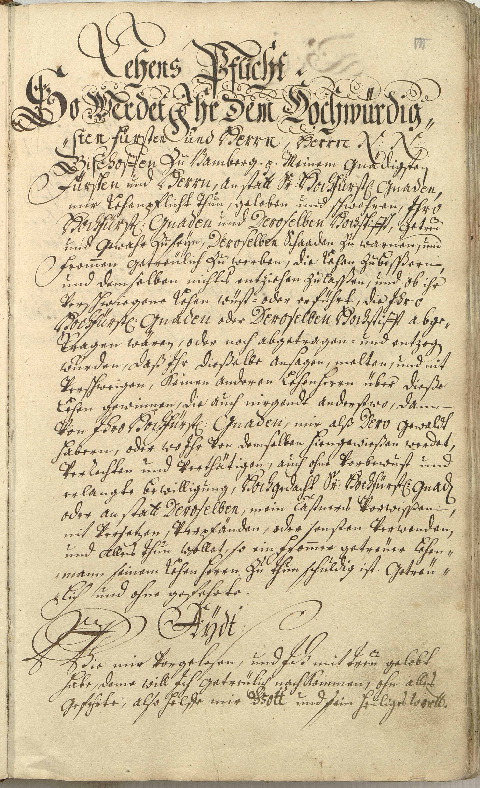

StA Bamberg, A 221, Nr. 2616



Kommentar
StA Bamberg, A 221 Nr. 2616
Auszug aus dem Zinsbuch des Kastenamts Weismain1735 ()
Auszug aus dem Zinsbuch des Kastenamts Weismain1735 ()
Archivaliengattung: Amtsbuch
Schwierigkeitsgrad: leicht
Schreiberhände:
- Nummerierung mit Bleistift (S1)
- Schreiber des Zinsbuchs (S2)
Auf dieser Seite aus dem Zinsbuch des Kastenamts Weismain werden die Pflichten der Vasallen gegenüber dem Bamberger Bischof und Hochstift als Lehensherrn formuliert. Darunter folgt die Formel für den Lehenseid.
Die ersten beiden Zeilen sind mit breiter Feder in Fraktur geschrieben und mit Schleifen und Schnörkeln verziert. Für die dritte Zeile, die Zwischenüberschrift, bestimmte Bezeichnungen für den Bamberger Bischof und dessen Hochstift sowie die Worte Jch, Gott und wortt in der Eidesformel wird eine Auszeichnungsschrift verwendet, die Elemente von Kanzleischrift und humanistischer Kursive vermischt. Der übrige Text steht in Kurrentschrift mit typischen Buchstabenformen und Ligaturen (ff, pf, sch mit verschliffenem c, st, tt, tz). Groß- und Kleinbuchstaben von a, k, v und z sind nicht eindeutig zu unterscheiden. Ober- und Unterlängen können am Zeilenbeginn oder nach einem Absatz sehr ausladend gestaltet sein, einzelne Anfangsbuchstaben sind mit treppenartigen Zierstrichen versehen (z.B. Z. 4: Meinem, Z. 6: thun).
Umlautstriche sind sehr deutlich als zwei parallele vertikale Striche ausgeführt, das diakritische Zeichen über u ähnelt einer kleinen 2. Etwas anders gestaltet ist das Zeichen über u bei den Worten getreu (Z. 8), wurden (Z. 15) und treu (Z. 28), wo es auch als übergeschriebenes e gelesen werden könnte.
Die ersten beiden Zeilen sind mit breiter Feder in Fraktur geschrieben und mit Schleifen und Schnörkeln verziert. Für die dritte Zeile, die Zwischenüberschrift, bestimmte Bezeichnungen für den Bamberger Bischof und dessen Hochstift sowie die Worte Jch, Gott und wortt in der Eidesformel wird eine Auszeichnungsschrift verwendet, die Elemente von Kanzleischrift und humanistischer Kursive vermischt. Der übrige Text steht in Kurrentschrift mit typischen Buchstabenformen und Ligaturen (ff, pf, sch mit verschliffenem c, st, tt, tz). Groß- und Kleinbuchstaben von a, k, v und z sind nicht eindeutig zu unterscheiden. Ober- und Unterlängen können am Zeilenbeginn oder nach einem Absatz sehr ausladend gestaltet sein, einzelne Anfangsbuchstaben sind mit treppenartigen Zierstrichen versehen (z.B. Z. 4: Meinem, Z. 6: thun).
Umlautstriche sind sehr deutlich als zwei parallele vertikale Striche ausgeführt, das diakritische Zeichen über u ähnelt einer kleinen 2. Etwas anders gestaltet ist das Zeichen über u bei den Worten getreu (Z. 8), wurden (Z. 15) und treu (Z. 28), wo es auch als übergeschriebenes e gelesen werden könnte.
Entzifferung
(Absatz Beginn)
1 (Nummerierung mit Bleistift:) VII
2 (Schreiber des Zinsbuchs:) Lehens Pflicht.
3 So Werdet Jhr Dem Hochwürdig-
4 ,,sten Fürsten und Herrn, Herrn N(omen) N(ominandum) (Wechsel des Schriftsystems)
5 Bischoffen(Wechsel des Schriftsystems) Zu Bamberg (et cetera) Meinem Gnädigsten
6 Fürsten(Wechsel des Schriftsystems) und Herrn(Wechsel des Schriftsystems), anstatt S(eine)r Hochfürst(lichen) Gnaden(Wechsel des Schriftsystems),
7 mir Lehenpflicht thun, geloben und schwehren, Jhro(Wechsel des Schriftsystems)
8 Hochfürst(lichen) Gnaden(Wechsel des Schriftsystems) und Deroselben Hochstifft(Wechsel des Schriftsystems), Getreu
9 und Gewahr Zu seÿn, Deroselben(Wechsel des Schriftsystems) Schaaden Zu warnen, und
10 From(m)en Getreülich Zu werben, die Lehen Zu besßern,
11 und demselben nichts entziehen Zu lasßen, und ob ihr
12 Verschwiegene Lehen wüst= oder erführt, die Jhro(Wechsel des Schriftsystems)
13 Hochfürst(lichen) Gnaden(Wechsel des Schriftsystems) oder Deroselben Hochstifft(Wechsel des Schriftsystems) abge-
14 Tragen wären, oder noch abgetragen= und entzog(en)
15 wurden, daß Jhr dießelbe ansagen, melten, und nit
16 Verschweigen, keinen anderen Lehenherrn über dieße
17 Lehen gewinnen, die auch nirgendt anderstwo, dann
18 Von Jhro Hochfürst(lichen) Gnaden(Wechsel des Schriftsystems), mir alß Dero(Wechsel des Schriftsystems) Gewaldt
19 habern, oder wo Jhr Von demselben hiengewießen werdet,
20 VerRechten und Verthätigen, auch ohne Vorbewust und
21 erlangte bewilligung, Hochgedacht S(eine)r Hochfürst(lichen) Gnad(en)(Wechsel des Schriftsystems)
22 oder anstatt Deroselben(Wechsel des Schriftsystems), mein Castners Vorwisßen,
23 nit Versetzen, Verpfänden, oder sonsten Verwenden,
24 und Alles thun wollet, so ein From(m)er getreüer Lehen-
25 ,,mann seinem Lehenherrn Zu thun schuldig ist. Getreü-
26 ,,lich und ohne gefehrte.
27 Aÿdt:
28 Wie mirVorgelesen,und Jch(Wechsel des Schriftsystems) mit treu gelobt
29 habe, deme will Jch Getreülich nachkommen, ohn alles
30 Gefehrte, also helffe mir Gott(Wechsel des Schriftsystems) und sein heiliges wortt(Wechsel des Schriftsystems).
(Absatz Ende)
Transkription
(Absatz Beginn)
1 (Nummerierung mit Bleistift:) VII
2 (Schreiber des Zinsbuchs:) Lehenspflicht.
3 So werdet ihr dem hochwürdig-
4 sten fürsten und herrn, herrn nomen nominandum(Wechsel des Schriftsystems),
5 bischoffen(Wechsel des Schriftsystems) zu Bamberg et cetera, meinem gnädigsten
6 fürsten(Wechsel des Schriftsystems) und herrn(Wechsel des Schriftsystems), anstatt seiner hochfürstlichen gnaden(Wechsel des Schriftsystems),
7 mir lehenpflicht thun, geloben und schwehren, ihro(Wechsel des Schriftsystems)
8 hochfürstlichen gnaden(Wechsel des Schriftsystems) und deroselben hochstifft(Wechsel des Schriftsystems) getreu
9 und gewahr zu seÿn, deroselben(Wechsel des Schriftsystems) schaaden zu warnen, und
10 frommen getreülich zu werben, die lehen zu besßern,
11 und demselben nichts entziehen zu lasßen. Und ob ihr
12 verschwiegene lehen wüst oder erführt, die ihro(Wechsel des Schriftsystems)
13 hochfürstlichen gnaden(Wechsel des Schriftsystems) oder deroselben hochstifft(Wechsel des Schriftsystems) abge-
14 tragen wären, oder noch abgetragen und entzogen
15 wurden, daß ihr dießelbe ansagen, melten, und nit
16 verschweigen, keinen anderen lehenherrn über dieße
17 lehen gewinnen, die auch nirgendt anderstwo, dann
18 von ihro hochfürstlichen gnaden(Wechsel des Schriftsystems), mir alß dero(Wechsel des Schriftsystems) gewaldt-
19 habern, oder wo ihr von demselben hiengewießen werdet,
20 verrechten und verthätigen, auch ohne vorbewust und
21 erlangte bewilligung, hochgedacht seiner hochfürstlichen gnaden(Wechsel des Schriftsystems)
22 oder anstatt deroselben(Wechsel des Schriftsystems) mein castners vorwisßen
23 nit versetzen, verpfänden, oder sonsten verwenden
24 und alles thun wollet, so ein frommer getreüer lehen-
25 mann seinem lehenherrn zu thun schuldig ist. Getreü-
26 lich und ohne gefehrte.
27 Aÿdt:
28 Wie mir vorgelesen und ich(Wechsel des Schriftsystems) mit treu gelobt
29 habe, deme will ich getreülich nachkommen ohn alles
30 gefehrte. Also helffe mir gott(Wechsel des Schriftsystems) und sein heiliges wortt(Wechsel des Schriftsystems).
(Absatz Ende)